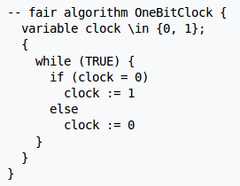
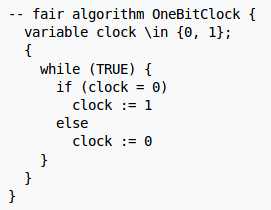
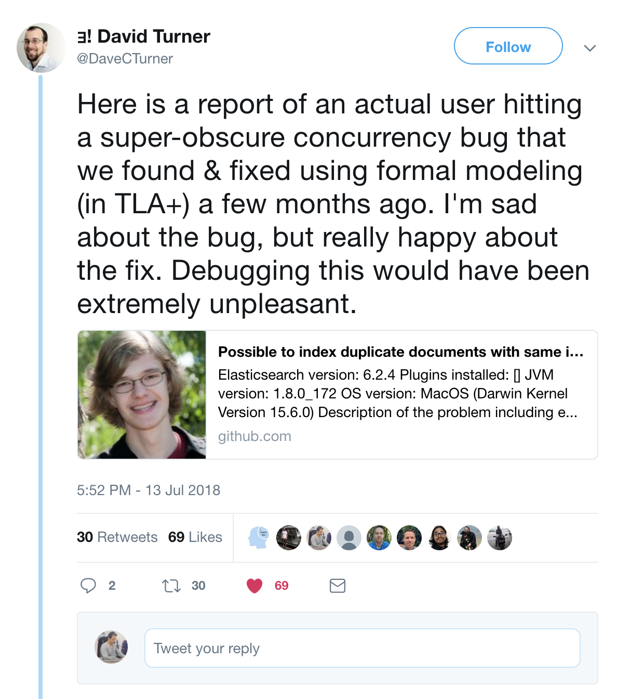
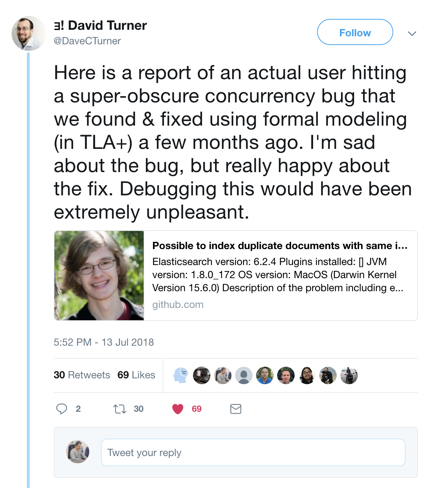

What is TLA+


 

 

How to implement a Split Brain Resolver algorithm?
- Members
- Leader
- Unreachable nodes
What might happen at any time?
- New member joins
- Member leaves
- Member unreachable
- Member reachable
- Leader changed
Who survives when a split happens?
Benefits of TLA+
- High level thinking
- Testing before coding
- Documentation